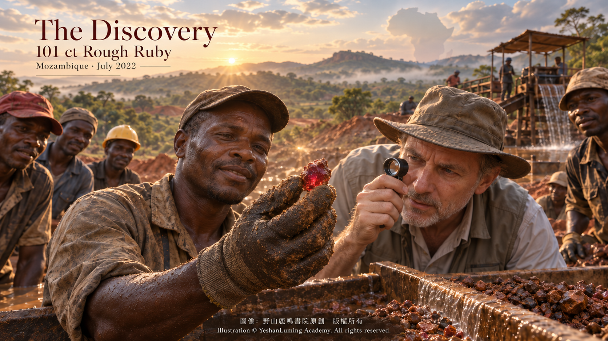
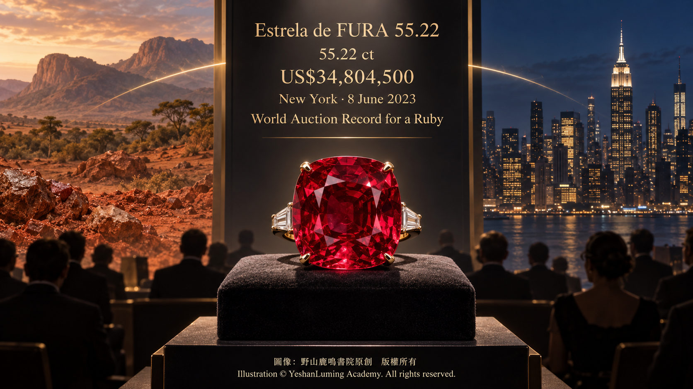

FURA之星·五十五克拉非洲巨星的驚世誕生The Estrela de FURA · The Astonishing Birth of a Fifty-Five-Carat African Superstar
The World of Gemstones · Ruby SeriesThe Estrela de FURA · The Astonishing Birth of a Fifty-Five-Carat African Superstar
The World of Gemstones · Ruby SeriesFURA之星·五十五克拉非洲巨星的驚世誕生
寶石世界·紅寶石篇
寶石世界·紅寶石篇（109）The World of Gemstones · Ruby Series (109)
在彩色寶石漫長的交易史中，人們曾經認為，頂級紅寶石的王冠將永遠由緬甸莫谷所獨佔。數百年來，緬甸莫谷的紅寶石，憑藉鮮艷的紅色、強烈的螢光與悠久的歷史聲望，建立了幾乎無可動搖的市場霸主地位。即使其他國家也能產出紅寶石，真正進入世界頂級珠寶與收藏市場的名石，似乎仍然必須以緬甸紅寶石為最高標準。
然而，進入二十一世紀以後，非洲大地深處沉睡的紅色火焰開始甦醒。莫三比克紅寶石的大量發現，不僅改變了全球紅寶石的供應格局，也逐漸改變了收藏家對非洲紅寶石的傳統看法。
如果說日出紅寶石第一次把紅寶石帶入每克拉百萬美元的時代，捍衛了緬甸紅寶石的歷史地位；那麼另一顆名為「FURA之星」（Estrela de FURA 55.22）的驚世巨大紅寶石，則憑藉55.22克拉的巨大體量與卓越品質，讓莫三比克紅寶石登上了世界拍賣舞台的最高峰。
二零二三年六月八日，在紐約蘇富比的「瑰麗珠寶」拍賣會上，這顆重達55.22克拉的莫三比克紅寶石，經過國際買家的競逐，最終以3,480萬美元成交。
這一價格超越了日出紅寶石在二零一五年創下的約3,030萬美元紀錄，使FURA之星成為拍賣史上成交總價最高的紅寶石。
值得注意的是，在同一天舉行的拍賣中，一顆重10.57克拉、名為「永恆粉紅」（The Eternal Pink）的艷彩紫粉紅色鑽石，同樣以3,480萬美元成交。因此，嚴格地說，FURA之星是非鑽石彩色寶石拍賣總價當之無愧的世界紀錄保持者。在珠寶業界，彩色鑽石仍然屬於鑽石，通常不與紅寶石、藍寶石和祖母綠等彩色寶石直接並列比較。
FURA之星的故事，並不是從紐約燈火輝煌的拍賣廳開始，而是從莫三比克北部一片覆蓋著紅土與灌木的礦區開始。
二零二二年七月，FURA Gems在莫三比克德爾加杜角省蒙特普埃茲（Montepuez）附近的紅寶石礦區，發現了一塊重達101克拉的寶石級紅寶石原石。對於紅寶石而言，重量超過100克拉而又具備鮮艷顏色、良好透明度與切磨潛力的原石，極為罕見。這塊原石一經公布，便迅速引起國際珠寶界和寶石學界的高度關注。
FURA Gems將它命名為「Estrela de FURA」。其中Estrela在葡萄牙語中意為「星星」，整個名稱可以理解為「FURA之星」。這個名稱既代表發現它的公司，也象徵這顆紅寶石將如新星一般，照亮莫三比克彩色寶石的未來。
在彩色寶石漫長的交易史中，人們曾經認為，頂級紅寶石的王冠將永遠由緬甸莫谷所獨佔。數百年來，緬甸莫谷的紅寶石，憑藉鮮艷的紅色、強烈的螢光與悠久的歷史聲望，建立了幾乎無可動搖的市場霸主地位。即使其他國家也能產出紅寶石，真正進入世界頂級珠寶與收藏市場的名石，似乎仍然必須以緬甸紅寶石為最高標準。
然而，進入二十一世紀以後，非洲大地深處沉睡的紅色火焰開始甦醒。莫三比克紅寶石的大量發現，不僅改變了全球紅寶石的供應格局，也逐漸改變了收藏家對非洲紅寶石的傳統看法。
如果說日出紅寶石第一次把紅寶石帶入每克拉百萬美元的時代，捍衛了緬甸紅寶石的歷史地位；那麼另一顆名為「FURA之星」（Estrela de FURA 55.22）的驚世巨大紅寶石，則憑藉55.22克拉的巨大體量與卓越品質，讓莫三比克紅寶石登上了世界拍賣舞台的最高峰。
二零二三年六月八日，在紐約蘇富比的「瑰麗珠寶」拍賣會上，這顆重達55.22克拉的莫三比克紅寶石，經過國際買家的競逐，最終以3,480萬美元成交。
這一價格超越了日出紅寶石在二零一五年創下的約3,030萬美元紀錄，使FURA之星成為拍賣史上成交總價最高的紅寶石。
值得注意的是，在同一天舉行的拍賣中，一顆重10.57克拉、名為「永恆粉紅」（The Eternal Pink）的艷彩紫粉紅色鑽石，同樣以3,480萬美元成交。因此，嚴格地說，FURA之星是非鑽石彩色寶石拍賣總價當之無愧的世界紀錄保持者。在珠寶業界，彩色鑽石仍然屬於鑽石，通常不與紅寶石、藍寶石和祖母綠等彩色寶石直接並列比較。
FURA之星的故事，並不是從紐約燈火輝煌的拍賣廳開始，而是從莫三比克北部一片覆蓋著紅土與灌木的礦區開始。
二零二二年七月，FURA Gems在莫三比克德爾加杜角省蒙特普埃茲（Montepuez）附近的紅寶石礦區，發現了一塊重達101克拉的寶石級紅寶石原石。對於紅寶石而言，重量超過100克拉而又具備鮮艷顏色、良好透明度與切磨潛力的原石，極為罕見。這塊原石一經公布，便迅速引起國際珠寶界和寶石學界的高度關注。

Click to enlarge
FURA Gems將它命名為「Estrela de FURA」。其中Estrela在葡萄牙語中意為「星星」，整個名稱可以理解為「FURA之星」。這個名稱既代表發現它的公司，也象徵這顆紅寶石將如新星一般，照亮莫三比克彩色寶石的未來。
但是，巨大的紅寶石原石並不必然等於一顆偉大的紅寶石。原石只是大自然交出的初稿，真正決定它能否成為傳世名石的，是人類如何理解它、切開它，並釋放出隱藏在其晶體深處的光芒。
紅寶石的晶體內部可能存在色帶、包裹體、裂隙和不同方向的結構弱點。對一塊101克拉的珍貴原石而言，任何切磨決定都可能影響數十克拉的重量，也可能改變最終寶石的顏色、透明度、比例與市場價值。
如果一味追求保留重量，寶石可能顯得過深、過暗，甚至出現明顯的滅光區；如果切磨過度，雖然可能換來更加明亮的外觀，卻會損失這顆原石最不可替代的巨大體量。因此，FURA Gems邀請法國寶石公司Garaude、Bellerophon Gemlab等專業團隊，共同研究這塊原石的最佳切磨方案。
技術人員利用三維掃描與數碼模型，分析原石的外形、透明區域、包裹體分布和可能的切磨方向，反覆比較不同方案在重量、顏色、亮度與風險之間的得失。最後，切磨團隊選定了原石中品質最優秀的核心，由Garaude的切磨師Chirapat Yingthawiphiphat在曼谷完成切磨。
當最後一道拋光完成後，原來重101克拉的巨型原石，蛻變成一顆重55.22克拉、比例均衡的墊形紅寶石。它保留了原石一半以上的重量，同時展現出鮮艷的紅色、優良的透明度與淨度，以及令人震撼的視覺效果。
從101克拉到55.22克拉，看似失去了45.78克拉，但切磨從來不是單純追求重量的遊戲。那些被捨棄的部分，換來了光線在寶石內部更有效的傳播與反射，也讓一塊令人驚嘆的原石，真正成為可以進入世界最高級珠寶市場的傳世名石。
切磨完成後，FURA之星被送往多家國際寶石實驗室進行檢測與研究，其中包括瑞士寶石學院（SSEF）、古柏林寶石實驗室（Gübelin Gem Lab）與瑞士寶石研究鑑定所（GRS）等機構。相關實驗室資料確認，它是一顆重55.22克拉、產自莫三比克的天然紅寶石，沒有發現加熱處理跡象。根據不同實驗室各自採用的標準，它還獲得了鮮艷紅色及「鴿血紅」等高度評價。
需要再次提醒讀者，「鴿血紅」是不同實驗室按照各自標準作出的商業顏色名稱，並不是全球完全統一的獨立色級。不同機構在判斷時，對色調、飽和度、明度、均勻性與螢光等因素的要求可能還有所不同。
FURA之星真正令人震撼的地方，不只是證書上的一個顏色名稱，而是它在55.22克拉的巨大體量下，仍然保持了鮮艷而均勻的紅色、良好透明度、極少的明顯裂隙，以及比例均衡的切工。
一般而言，不少產自角閃岩相關礦床的莫三比克紅寶石，含鐵量可能高於典型的大理岩型莫谷紅寶石，因此紅色螢光往往相對較弱。但這並不表示莫三比克紅寶石必然暗淡，也不表示它們無法擁有鮮艷明亮的紅色。
FURA之星的出現，正好打破了市場對非洲紅寶石的簡單化理解。它證明莫三比克不僅可以提供穩定而龐大的商業紅寶石產量，也能在極少數特殊條件下，孕育出足以進入世界最高級收藏市場的巨型紅寶石。
當光線進入這顆墊形紅寶石，在內部反射並從冠部重新釋放時，巨大的晶體仍能呈現鮮活而富有生命力的紅色。它不像一塊笨重而沉默的礦物，更像一顆被數億年地質力量壓縮而成、直到今天才突然點亮的非洲紅星。
作為剛玉族的一員，紅寶石的一般礦物學性質包括：莫氏硬度為9，相對密度約為4.00，折射率通常約在1.762至1.770之間，雙折射率約為0.008。這些數據反映的是紅寶石所屬礦物種類的一般物理與光學性質，並不是FURA之星公開報告中逐項列出的個體檢測結果。真正使它與普通紅寶石拉開巨大距離的，是重量、顏色、透明度、淨度、切工、天然身份、無燒狀態和可追溯的發現歷史共同構成的整體品質。
二零二三年，蘇富比在香港首次公開展示切磨完成的FURA之星，隨後又把它帶到台北、新加坡、日內瓦和杜拜等地巡迴展出。這場跨越多個國際城市的旅程，使世界各地的收藏家第一次有機會近距離觀看這顆來自非洲的紅色巨星。
二零二三年六月八日，FURA之星最終在紐約蘇富比正式拍賣，以3,480萬美元成交。按55.22克拉計算，它的平均價格約為每克拉63萬美元。

Click to enlarge
這一單克拉價格低於日出紅寶石二零一五年創下的約118.3萬美元，也低於緋紅火焰約120萬美元的單克拉紀錄。但是，FURA之星憑藉前所未有的巨大重量與整體品質，仍然創下了紅寶石拍賣總價的新世界紀錄。
這個結果揭示了彩色寶石估價中一個極為重要的規律：總價與單克拉價格，是兩個彼此相關卻不能混為一談的概念。
體量較小、顏色與淨度極致的名石，可能創造更高的單克拉價格；而一顆在巨大重量下仍然保持優秀品質的寶石，則可能依靠其不可複製的稀有性，創造更高的成交總價。
日出紅寶石代表的是緬甸莫谷數百年傳統的巔峰，也是第一顆跨越每克拉100萬美元門檻的紅寶石；FURA之星代表的則是莫三比克新礦區的崛起，以及非洲紅寶石在重量、品質和市場地位上的歷史突破。
它們並不是簡單的勝負關係，而是分別在不同方向上改寫了紅寶石的歷史。
FURA之星的誕生，是數億年前泛非造山運動及莫三比克造山帶複雜地質作用留下的珍貴結晶，也是現代礦業、三維掃描、寶石切磨、實驗室鑑定與國際拍賣體系共同完成的一場接力。
它證明了，名石的誕生既需要大自然億萬年的偶然，也需要人類在發現、保護、研究、切磨和展示過程中的理性判斷。
莫谷的歷史光環並沒有因FURA之星的出現而熄滅，但是世界從此更加清楚地看到：頂級紅寶石的王冠，不再只屬於亞洲古老礦山。非洲的紅土地，同樣可以孕育出震撼世界、登上拍賣紀錄頂峰的永恆巨星。
為了方便讀者將來研究頂級彩色寶石、查閱拍賣歷史或進行高端收藏交流，下面把FURA之星的核心寶石學資料與商業紀錄綜合整理如下。
一、發現與原石資料
- 名稱：FURA之星（Estrela de FURA 55.22）。
- 名稱含義：Estrela在葡萄牙語中意為「星星」，全名意為「FURA之星」。
- 發現時間：二零二二年七月。
- 發現地點：莫三比克德爾加杜角省蒙特普埃茲附近的FURA紅寶石礦區。
- 原石重量：101克拉。
- 發現者：FURA Gems。
二、切磨資料
- 成品重量：55.22克拉。
- 形狀與切工：墊形切工。
- 原石重量保留率：約54.7%。
- 切磨地點：泰國曼谷。
- 參與團隊：Garaude、Bellerophon Gemlab等專業團隊。
- 技術方法：三維掃描、數碼建模及多種切磨方案比較。
- 切磨師：Chirapat Yingthawiphiphat。
三、寶石學資料
- 寶石種類：天然紅寶石。
- 產地：莫三比克。
- 加熱情況：沒有發現加熱處理跡象。
- 顏色描述：根據不同實驗室各自採用的標準，獲得鮮艷紅色及「鴿血紅」等評價。
- 主要品質特徵：巨大重量、鮮艷而均勻的紅色、良好透明度、極少明顯裂隙，以及比例均衡的切工。
- 相關實驗室與研究機構：SSEF、Gübelin Gem Lab、GRS等。
四、拍賣與市場紀錄
- 首次公開展示：二零二三年四月，香港蘇富比。
- 巡迴展示城市：香港、台北、新加坡、日內瓦及杜拜等地。
- 拍賣日期：二零二三年六月八日。
- 拍賣地點：紐約蘇富比。
- 成交價：3,480萬美元。
- 平均每克拉價格：約63萬美元。
- 歷史地位：拍賣史上成交總價最高的紅寶石，並躋身成交價格最高的彩色寶石之列。
最後必須記住，FURA之星的真正意義，不只是它比日出紅寶石多賣了幾百萬美元，也不只是它擁有令人震撼的55.22克拉重量。它真正改變的，是世界對紅寶石產地的想像。從此以後，當人們談論世界最頂級的紅寶石時，除了緬甸莫谷之外，再也不能忽略莫三比克蒙特普埃茲的名字。
一顆紅寶石，改寫了一項世界紀錄；一顆紅寶石，也讓整片非洲紅土地第一次站到了世界彩色寶石舞台的最中央。
（未完待續）
Throughout the long history of the colored gemstone trade, people once believed that the crown of the finest rubies would forever belong exclusively to Mogok, Burma. For centuries, Mogok rubies established an almost unshakable dominance in the market through their vivid red color, strong fluorescence, and distinguished historical reputation. Although other countries also produced rubies, the famous stones that truly entered the world’s highest jewelry and collecting circles still seemed destined to be measured against Burmese rubies as the supreme standard.
Yet after the beginning of the twenty-first century, the red fire sleeping deep beneath the African earth began to awaken. The large-scale discovery of rubies in Mozambique not only transformed the global ruby supply but also gradually changed collectors’ traditional perceptions of African rubies.
If the Sunrise Ruby ushered ruby into the era of a million dollars per carat and defended the historic standing of Burmese rubies, then another astonishing giant—the Estrela de FURA 55.22—carried Mozambique ruby to the summit of the international auction world through its enormous 55.22-carat weight and exceptional quality.
On June 8, 2023, at Sotheby’s Magnificent Jewels auction in New York, this 55.22-carat Mozambique ruby attracted competition from international buyers and ultimately sold for US$34.8 million.
The price surpassed the approximately US$30.3 million record established by the Sunrise Ruby in 2015, making the Estrela de FURA the most expensive ruby ever sold at auction.
It is worth noting that, at the same auction, a 10.57-carat Fancy Vivid Purplish Pink diamond named the Eternal Pink also sold for US$34.8 million. Strictly speaking, therefore, the Estrela de FURA is the undisputed auction-price record holder among colored gemstones other than diamonds. Within the jewelry trade, colored diamonds remain members of the diamond family and are not usually compared directly with colored gemstones such as rubies, sapphires, and emeralds.
The story of the Estrela de FURA did not begin in the glittering auction room of New York. It began instead in a mining region of northern Mozambique covered in red earth and scrub vegetation.
In July 2022, FURA Gems discovered a 101-carat gem-quality ruby crystal at its ruby mine near Montepuez in Mozambique’s Cabo Delgado Province. For ruby, a rough crystal exceeding 100 carats while also possessing vivid color, good transparency, and the potential to produce a fine faceted gemstone is exceptionally rare. Once announced, the discovery quickly attracted widespread attention throughout the international jewelry and gemological communities.
FURA Gems named it the Estrela de FURA. In Portuguese, estrela means “star,” so the full name can be understood as “the Star of FURA.” The name represents both the company that discovered it and the hope that this ruby would shine like a rising star over the future of Mozambique’s colored gemstones.
Throughout the long history of the colored gemstone trade, people once believed that the crown of the finest rubies would forever belong exclusively to Mogok, Burma. For centuries, Mogok rubies established an almost unshakable dominance in the market through their vivid red color, strong fluorescence, and distinguished historical reputation. Although other countries also produced rubies, the famous stones that truly entered the world’s highest jewelry and collecting circles still seemed destined to be measured against Burmese rubies as the supreme standard.
Yet after the beginning of the twenty-first century, the red fire sleeping deep beneath the African earth began to awaken. The large-scale discovery of rubies in Mozambique not only transformed the global ruby supply but also gradually changed collectors’ traditional perceptions of African rubies.
If the Sunrise Ruby ushered ruby into the era of a million dollars per carat and defended the historic standing of Burmese rubies, then another astonishing giant—the Estrela de FURA 55.22—carried Mozambique ruby to the summit of the international auction world through its enormous 55.22-carat weight and exceptional quality.
On June 8, 2023, at Sotheby’s Magnificent Jewels auction in New York, this 55.22-carat Mozambique ruby attracted competition from international buyers and ultimately sold for US$34.8 million.
The price surpassed the approximately US$30.3 million record established by the Sunrise Ruby in 2015, making the Estrela de FURA the most expensive ruby ever sold at auction.
It is worth noting that, at the same auction, a 10.57-carat Fancy Vivid Purplish Pink diamond named the Eternal Pink also sold for US$34.8 million. Strictly speaking, therefore, the Estrela de FURA is the undisputed auction-price record holder among colored gemstones other than diamonds. Within the jewelry trade, colored diamonds remain members of the diamond family and are not usually compared directly with colored gemstones such as rubies, sapphires, and emeralds.
The story of the Estrela de FURA did not begin in the glittering auction room of New York. It began instead in a mining region of northern Mozambique covered in red earth and scrub vegetation.
In July 2022, FURA Gems discovered a 101-carat gem-quality ruby crystal at its ruby mine near Montepuez in Mozambique’s Cabo Delgado Province. For ruby, a rough crystal exceeding 100 carats while also possessing vivid color, good transparency, and the potential to produce a fine faceted gemstone is exceptionally rare. Once announced, the discovery quickly attracted widespread attention throughout the international jewelry and gemological communities.
Click to enlarge
FURA Gems named it the Estrela de FURA. In Portuguese, estrela means “star,” so the full name can be understood as “the Star of FURA.” The name represents both the company that discovered it and the hope that this ruby would shine like a rising star over the future of Mozambique’s colored gemstones.
Yet an enormous ruby crystal does not necessarily become a great ruby. Rough is merely nature’s first draft. What ultimately determines whether it can become a legendary gemstone is how human beings understand it, open it, and release the light concealed deep within its crystal.
A ruby crystal may contain color zoning, inclusions, fissures, and structural weaknesses oriented in different directions. With a precious 101-carat piece of rough, any cutting decision could affect dozens of carats of weight while also changing the finished gemstone’s color, transparency, proportions, and market value.
If too much emphasis were placed on preserving weight, the gemstone might appear excessively deep or dark, with conspicuous areas of extinction. If it were cut too aggressively, the result might be brighter, but the rough crystal’s most irreplaceable quality—its immense size—would be sacrificed. FURA Gems therefore invited professional teams, including the French gemstone company Garaude and Bellerophon Gemlab, to study the best cutting plan for the rough.
The specialists used three-dimensional scanning and digital models to analyze the rough crystal’s shape, transparent areas, distribution of inclusions, and possible cutting orientations. They repeatedly compared how different plans would balance weight, color, brilliance, and risk. Finally, the cutting team selected the finest core of the rough, and Garaude cutter Chirapat Yingthawiphiphat completed the cutting in Bangkok.
When the final stage of polishing was completed, the original 101-carat crystal had been transformed into a well-proportioned, 55.22-carat cushion-shaped ruby. It retained more than half of the rough crystal’s original weight while displaying vivid red color, fine transparency and clarity, and a breathtaking visual presence.
The reduction from 101 carats to 55.22 carats may appear to represent a loss of 45.78 carats, but cutting is never simply a game of preserving weight. The material sacrificed allowed light to travel and reflect more effectively within the gemstone, transforming a remarkable piece of rough into an extraordinary jewel worthy of the world’s highest jewelry market.
After cutting, the Estrela de FURA was submitted to several international gemological laboratories for testing and study, including the Swiss Gemmological Institute (SSEF), Gübelin Gem Lab, and GemResearch Swisslab (GRS). Laboratory documentation confirmed that it was a 55.22-carat natural ruby from Mozambique, with no indications of heating. According to the individual standards employed by the different laboratories, it also received highly favorable color descriptions, including vivid red and “pigeon’s blood.”
Readers should once again be reminded that “pigeon’s blood” is a commercial color designation applied by different laboratories according to their own standards. It is not an independent color grade governed by a single, universally accepted global standard. Different institutions may vary in their requirements concerning hue, saturation, tone, color uniformity, fluorescence, and other factors.
What makes the Estrela de FURA truly astonishing is not merely a color name printed on a report, but its ability to preserve vivid and evenly distributed red color, good transparency, very few conspicuous fissures, and a well-proportioned cut at the immense weight of 55.22 carats.
Generally speaking, many Mozambique rubies originating from amphibole-related deposits may contain more iron than typical marble-hosted Mogok rubies, resulting in relatively weaker red fluorescence. But this does not mean that Mozambique rubies are inevitably dark, nor does it mean that they cannot display vivid and brilliant red color.
The appearance of the Estrela de FURA challenged the market’s oversimplified understanding of African rubies. It demonstrated that Mozambique can provide not only a large and stable supply of commercial rubies, but also, under exceptionally rare conditions, gigantic rubies capable of entering the world’s highest collecting market.
When light enters this cushion-shaped ruby, reflects within it, and emerges again through its crown, the massive crystal still presents a lively red color filled with vitality. It does not resemble a heavy and silent mineral, but rather an African red star compressed by hundreds of millions of years of geological forces and suddenly illuminated in our own time.
As a member of the corundum family, ruby generally has a Mohs hardness of 9, a relative density of approximately 4.00, a refractive index commonly ranging from about 1.762 to 1.770, and a birefringence of approximately 0.008. These figures represent the general physical and optical properties of the mineral species to which ruby belongs; they are not individual test results publicly listed item by item in reports for the Estrela de FURA. What truly separates it from an ordinary ruby is the totality of its weight, color, transparency, clarity, cut, natural identity, unheated condition, and traceable history of discovery.
In 2023, Sotheby’s publicly unveiled the newly cut Estrela de FURA in Hong Kong before taking it on a tour to Taipei, Singapore, Geneva, Dubai, and other cities. This international journey gave collectors around the world their first opportunity to view the African red giant at close range.
On June 8, 2023, the Estrela de FURA was formally offered at Sotheby’s New York and sold for US$34.8 million. Based on its weight of 55.22 carats, its average price was approximately US$630,000 per carat.
Click to enlarge
This per-carat price was lower than the approximately US$1.183 million achieved by the Sunrise Ruby in 2015 and the approximately US$1.2 million record established by the Crimson Flame. Nevertheless, through its unprecedented size and exceptional overall quality, the Estrela de FURA established a new world record for the highest total auction price achieved by a ruby.
The result reveals an essential principle in colored gemstone valuation: total price and price per carat are related, but they are not the same concept and must never be confused.
A somewhat smaller famous gemstone with exceptional color and clarity may achieve a higher price per carat. A gemstone that retains outstanding quality at an enormous weight, however, may use its irreproducible rarity to achieve a higher total selling price.
The Sunrise Ruby represents the summit of Mogok’s centuries-old tradition and was the first ruby to cross the threshold of US$1 million per carat. The Estrela de FURA represents the rise of Mozambique’s newer ruby deposits and a historic breakthrough for African rubies in weight, quality, and market standing.
Their stories are not a simple contest of victory and defeat. Each rewrote ruby history in a different direction.
The birth of the Estrela de FURA is the precious legacy of the Pan-African orogeny and the complex geological processes of the Mozambique Belt hundreds of millions of years ago. It is also the culmination of a relay involving modern mining, three-dimensional scanning, gemstone cutting, laboratory identification, and the international auction system.
It demonstrates that the birth of a legendary gemstone requires both nature’s billion-year chain of chance and rational human judgment throughout its discovery, protection, study, cutting, and presentation.
Mogok’s historic radiance has not been extinguished by the appearance of the Estrela de FURA. Yet the world can now see more clearly that the crown of the finest rubies no longer belongs exclusively to the ancient mines of Asia. The red earth of Africa can also produce an eternal superstar capable of astonishing the world and ascending to the summit of auction history.
For readers who may wish to study important colored gemstones, consult auction history, or participate in discussions concerning high-end collecting, the essential gemological information and commercial records of the Estrela de FURA are summarized below.
I. Discovery and Rough Ruby
- Name: The Estrela de FURA 55.22.
- Meaning of the name: Estrela means “star” in Portuguese; the full name means “the Star of FURA.”
- Date of discovery: July 2022.
- Place of discovery: FURA’s ruby mine near Montepuez in Mozambique’s Cabo Delgado Province.
- Weight of the rough: 101 carats.
- Discoverer: FURA Gems.
II. Cutting Information
- Finished weight: 55.22 carats.
- Shape and cut: Cushion-shaped cut.
- Weight retention from the rough: Approximately 54.7%.
- Place of cutting: Bangkok, Thailand.
- Participating teams: Garaude, Bellerophon Gemlab, and other professional teams.
- Technical methods: Three-dimensional scanning, digital modeling, and comparison of multiple cutting plans.
- Cutter: Chirapat Yingthawiphiphat.
III. Gemological Information
- Gemstone variety: Natural ruby.
- Origin: Mozambique.
- Heat treatment: No indications of heating.
- Color description: According to the individual standards applied by different laboratories, it received descriptions including vivid red and “pigeon’s blood.”
- Principal quality characteristics: Immense weight, vivid and evenly distributed red color, good transparency, very few conspicuous fissures, and a well-proportioned cut.
- Related laboratories and research institutions: SSEF, Gübelin Gem Lab, GRS, and others.
IV. Auction and Market Records
- First public unveiling: Sotheby’s Hong Kong, April 2023.
- Cities on its international tour: Hong Kong, Taipei, Singapore, Geneva, Dubai, and others.
- Auction date: June 8, 2023.
- Auction location: Sotheby’s New York.
- Price realized: US$34.8 million.
- Average price per carat: Approximately US$630,000.
- Historical significance: The ruby with the highest total auction price in history and one of the most expensive colored gemstones ever sold.
One final truth must be remembered: the true significance of the Estrela de FURA lies neither simply in the fact that it sold for several million dollars more than the Sunrise Ruby, nor merely in its astonishing weight of 55.22 carats. What it truly transformed was the world’s perception of ruby origins. From that moment onward, whenever people discussed the finest rubies in the world, they could no longer speak only of Mogok, Burma, while overlooking Montepuez, Mozambique.
One ruby rewrote a world record; one ruby also brought the red earth of Africa to the very center of the global colored gemstone stage for the first time.
(To be continued)